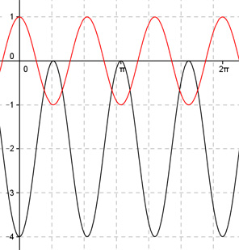

Aufgabe 272 Bestimmen Sie a, b und d für den dargestellten Graphen der Form y = a * cos (b * (x + c)) + d.  2п Abgelesen: Periode p = ---- --> 3 2п 2п |b| = ---- = ---- = 3 p 2п ---- 3 b = 3 oder -3 wegen cos(x) = cos(-x) acos(3(x + c)) + d oder acos(-3(x + c)) + d Verschiebung von Punkt (0|0) in (0|-2) --> Abgelesen: Verschiebung entlang der y-Achse um -2 --> d = -2 acos(3(x + c)) - 2 oder acos(-3(x + c)) - 2 Abgelesen: Keine Verschiebung entlang y = -2 --> c = 0 acos(3x) - 2 oder acos(-3x) - 2 Abgelesen: |a| = 2 Spiegelung an der x-Achse --> a = -2 --> y = -2cos(3x) - 2 oder y = -2cos(-3x) - 2 Zum Vergleich: cos(3x)